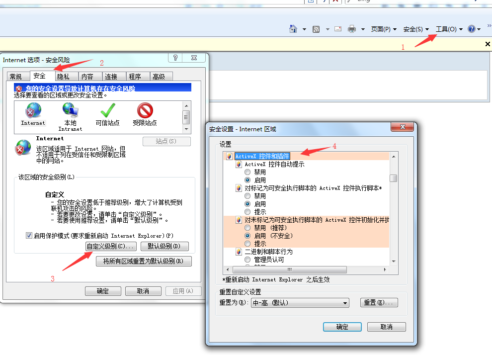

最近写一个需求时遇到一个问题,用户需要通过点击一个按钮直接读取他自己电脑上D盘的一个txt文件内容显示到页面,因为项目现在是用ZK写的.我对于ZK也是刚刚了解不就,很多都还不是很熟.起初我是想用io流去读取,然后写完发现,这样每次读取的都是服务器上的D盘下的txt文件,所以在网上找了很久.很多都是获取服务器上的文件夹或者是上传到服务器再读取.直接通过文件地址读取文件内容很少.因为这样很不安全.目前我也只找到了一种,但是只限于IE浏览器.
<?page title="new page title" contentType="text/html;charset=UTF-8"?>
<zk>
<window title="ZK中使用JS读取客户端txt文件内容问题" border="normal">
<button label="点击获取txt内容" id="butt"/>
<label id="filePath" value="D:\\test.txt" style="display:none"/>
<separator/>
<label id="info" style="color:red"/>
<script><![CDATA[
zk.afterMount(function(){
jq("$butt").click(function(){
try{
var fs =new ActiveXObject("Scripting.FileSystemObject");
}catch(e){
alert("浏览器不兼容,安全级别太高，无法读取，请使用IE浏览器打开!");
}
var ts,s;
var str = "";
var ForReading = 1;
//文件路径,这里是写死在label
var path = jq("$filePath").text();//这里用 .val()获取不到值,毕竟不是jsp
//读取文件的内容。
ts = fs.OpenTextFile(path,ForReading,true);
while(!ts.AtEndOfStream){
s = ts.ReadLine();
str+=s;
}
ts.Close();
jq("$info").text(str);
});
});
]]></script>
</window>
</zk>
因为ActiveX是IE流量器的插件,所以这个只能在IE浏览器可用.如果你发现IE浏览器也没出来,那你可能是ActiveX插件相关功能没开,需要在IE浏览器进行如下设置

然后就出来了,但是这样网也就会提示 存在安全风险,没办法,这种操作本来就是不安全的行为.其他浏览器,目前我只知道必须用户通过手动选择文件后在读取文件内容,没发现能通过文件路径直接去读取客户端电脑上的文件.如果哪位大神知道,可以分享给我哦.